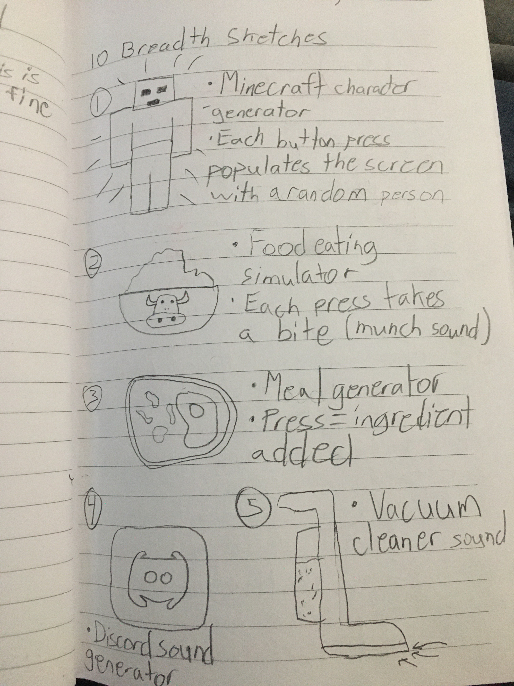
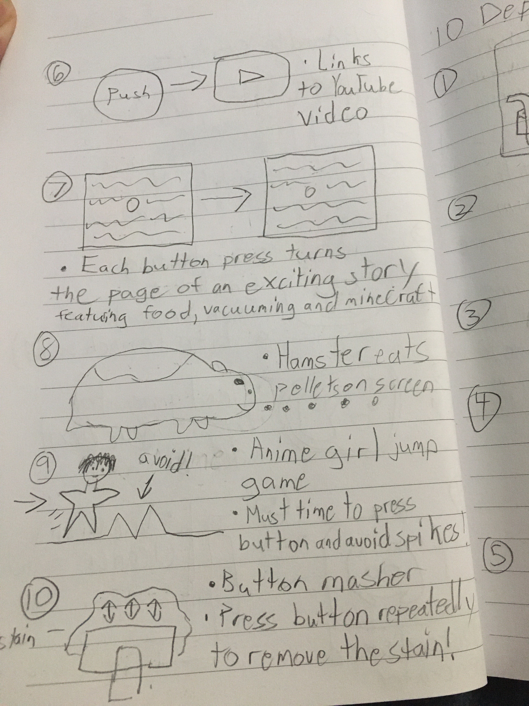
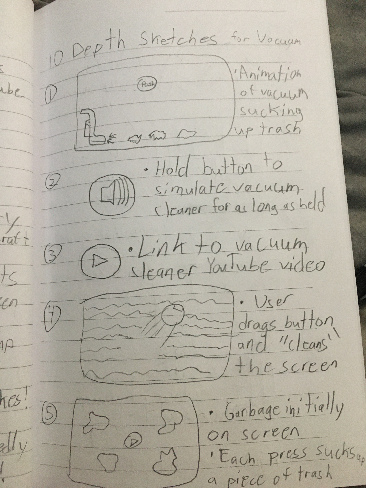
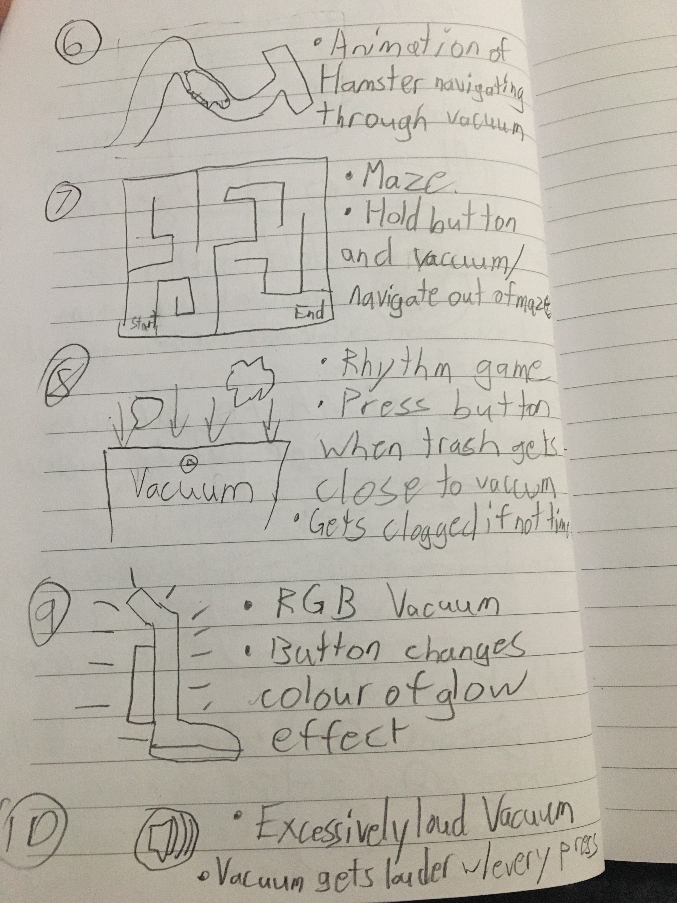

Vacuum Cleaner Simulator is a program, that as the name suggests, seeks to simulate the calming experience of vacuum. This idea was inspired by an insightful interview with Nielson Trung about what has brought delight to him in the past few months. Limited to only the use of a single button, Vacuum Cleaner Simulator brings together Nielson's love of vacuum cleaning through the backdrop of eye-pleasing vacuums and the relaxing, dulcet of the machine in action. More functionality had between initially planned but left unimplemented due to lack of time management.

The interview was quite varied and some initial designs were sketched.
Breadth Sketches
 The initial concept designs were quite varied, taking into account most of the things mentioned in the interview with the client, Nielson. Due to the sheer amount of information gained from Nielson, ideas ranged wildly from simulating Minecraft to making food. The implementation of a single button to spark joy was quite a task and many functions were designed. From simple tasks such as just linking to a YouTube video to far more complicated ones like creating an interactive game were synthesized.
Depth Sketches
 Once the vacuum cleaner theme was chosen from the breadth sketches, numerous concepts were made to utilize it as the focus. More concept functions were created, with some being recycled from the breadth sketches.